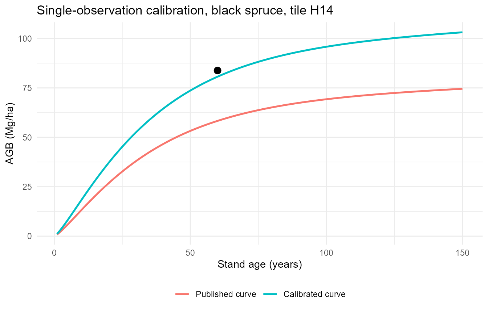
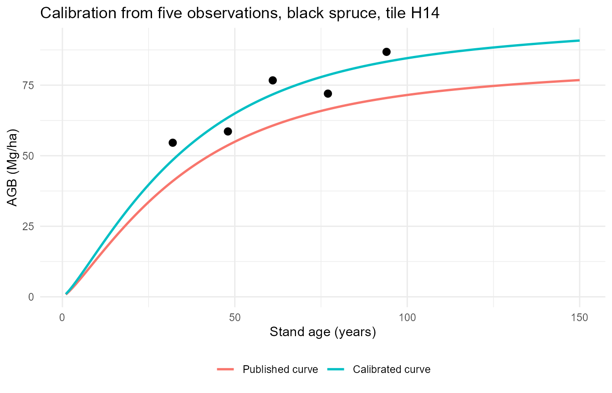
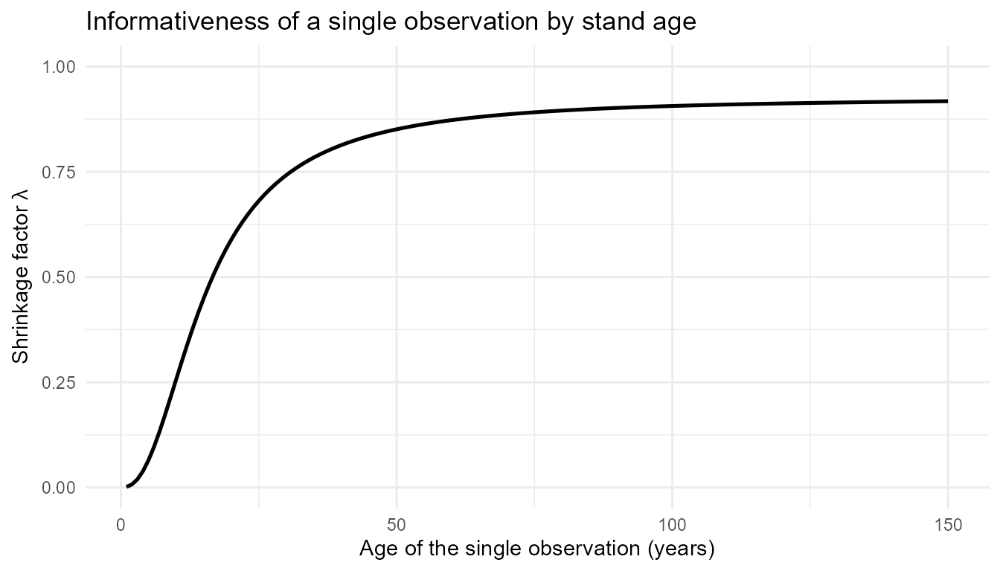
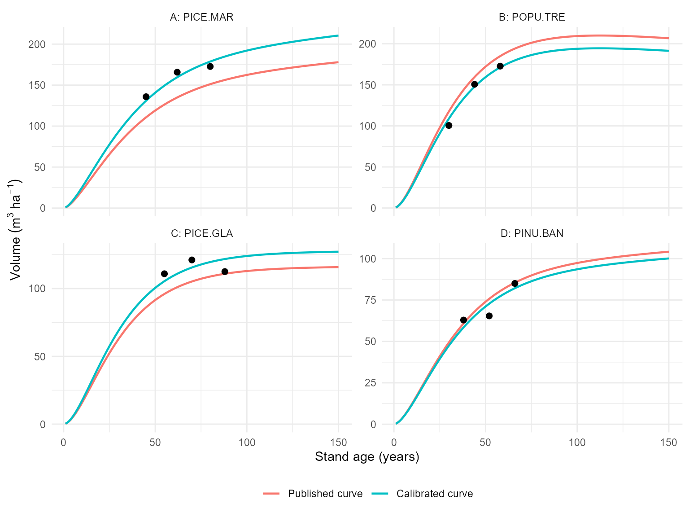

Purpose
predict_rsyc() returns the published national curve for
a given species and area. Where local field measurements are available —
observed aboveground biomass (AGB) or total volume at known stand ages —
calibrate_rsyc() adjusts that curve to the measured
stand.
The adjustment is an empirical best linear unbiased predictor (EBLUP) of the pixel-level random effect on the curve’s asymptote. A single level adjustment is estimated for the stand and substituted into the curve equation. The estimate is shrunk toward zero in proportion to the strength of the local evidence, so a curve supported by one measurement is adjusted conservatively, whereas a curve supported by several consistent measurements is adjusted more fully.
The method
The published curve
RSYC curves were fitted as nonlinear mixed-effects models in which the tile- and pixel-level random effects act on the scale (asymptote) parameter \(\beta_1\):
\[AGB_{ijk} = \left(\beta_1 + b_i + b_{ij}\right) e^{-\beta_4 age_{ijk}}\left(1 - e^{-\beta_2 age_{ijk}}\right)^{\beta_3} + \epsilon_{ijk}\]
where \(b_i\) is the random effect for area \(i\), \(b_{ij}\) the random effect for pixel \(j\) within that area, and \(\epsilon_{ijk}\) the residual error. Writing the shape separately,
\[g(age) = e^{-\beta_4 age}\left(1 - e^{-\beta_2 age}\right)^{\beta_3}\]
the curve is a level multiplied by a dimensionless shape that rises from 0 toward about 1. Only \(\beta_1\) carries the random effects; \(\beta_2\), \(\beta_3\) and \(\beta_4\) are fixed, so the random effects change the magnitude of the trajectory but never its age-dependent form.
The b1 coefficient published in RSYC_models
for a given stratum is already the stratum-level asymptote
\(\beta_1 + b_i\), not the bare
population fixed effect. (parent_b1_random_effect stores
\(b_i\) separately for reference; it
must not be added to b1.) So the uncalibrated trajectory
returned by predict_rsyc() is
\[AGB_{RSYC}(age) = \left(\beta_1 + b_i\right) g(age) = \texttt{b1}\cdot g(age)\]
Estimating the local random effect
For a stand that was not part of model fitting, the pixel-level effect \(b_{ij}\) is not available from the fitted model and must be predicted from local observations. Because \(b_{ij}\) enters linearly through the scale parameter, its prediction reduces to the empirical best linear unbiased predictor (EBLUP) for a random coefficient. Given observations \(y_j\) at ages \(age_j\), with \(g_j = g(age_j)\),
\[b = \frac{\sum_j g_j\left(y_j - \texttt{b1}\cdot g_j\right)} {\sum_j g_j^2 + \dfrac{\sigma^2_\epsilon}{\sigma^2_b}}\]
where \(\sigma^2_b\) is the
pixel-level random-effect variance (local_b1_var) and \(\sigma^2_\epsilon\) the residual variance
(residual_var) of the assigned model.
Without the variance term this would be an ordinary least-squares estimate of the level shift, which would force the curve exactly through the observations. The added \(\sigma^2_\epsilon/\sigma^2_b\) shrinks the estimate toward zero, recognising that the observations themselves carry measurement error. The strength of that pull is summarised by the shrinkage factor
\[\lambda = \frac{\sum_j g_j^2}{\sum_j g_j^2 + \dfrac{\sigma^2_\epsilon}{\sigma^2_b}} \in [0, 1]\]
Values near 1 mean the local estimate is retained almost in full; values near 0 mean it is pulled back to the published curve. Because \(\sigma^2_\epsilon/\sigma^2_b\) is fixed by the model, \(\lambda\) rises toward 1 as \(\sum_j g_j^2\) grows — with more observations, and with observations at ages where \(g_j\) is large.
The calibrated curve
The estimated effect is substituted back into the asymptote:
\[AGB^{cal}(age) = \left(\beta_1 + b_i + b\right) g(age) = \left(\texttt{b1} + b\right) g(age)\]
Equivalently, this scales the published curve by the age-independent
ratio \((\texttt{b1} +
b)/\texttt{b1}\), reported as ratio_blup. The two
statements are the same operation written differently, since \(g(age)\) cancels.
Example 1: a single observation
A single measurement is sufficient to adjust the asymptote. In this example a black spruce stand in tile H14 was measured once, at age 60:
single <- calibrate_rsyc(
response = "agb",
species = "PICE.MAR",
strata_level = "tile",
strata_id = "H14",
obs_age = 60,
obs_response = 83.8
)
single$shrinkage_factor
#> [1] 0.8777606
single$b_pixel
#> [1] 26.15953
single$ratio_blup
#> [1] 1.38336The estimated adjustment to the asymptote is 26.2 Mg/ha, corresponding to a ratio of 1.38, an increase of approximately 38% relative to the published curve. None of the constraints described below were reached:
c(
random_effect = single$random_effect_limited,
ratio = single$ratio_limited,
value = single$value_limited
)
#> random_effect ratio value
#> FALSE FALSE FALSEEvaluating the calibrated curve over the full age range shows the published and calibrated curves running parallel, separated by the constant ratio:
single_curve <- calibrate_rsyc(
"agb", "PICE.MAR", "tile", "H14",
obs_age = 60, obs_response = 83.8,
predict_age = 1:150
)
single_long <- tidyr::pivot_longer(
single_curve$predictions,
c(value, value_uncalibrated),
names_to = "series", values_to = "agb"
)
single_long$series <- factor(
single_long$series,
levels = c("value_uncalibrated", "value"),
labels = c("Published curve", "Calibrated curve")
)
ggplot2::ggplot(single_long, ggplot2::aes(age, agb, colour = series)) +
ggplot2::geom_line(linewidth = 0.9) +
ggplot2::geom_point(
data = tibble::tibble(age = 60, agb = 83.8),
ggplot2::aes(age, agb), inherit.aes = FALSE, size = 3
) +
ggplot2::labs(
x = "Stand age (years)", y = "AGB (Mg/ha)", colour = NULL,
title = "Single-observation calibration, black spruce, tile H14"
) +
ggplot2::theme_minimal() +
ggplot2::theme(legend.position = "bottom")
With one measurement the result is best described as a single-observation BLUP-anchored curve: it re-levels the published curve, but it does not learn a new growth trajectory from one point.
Example 2: several observations
Repeated measurements of the same stand provide more evidence, so the estimate is shrunk less. The observations below are scattered on either side of the fitted trajectory, as repeated field measurements typically are:
multiple <- calibrate_rsyc(
"agb", "PICE.MAR", "tile", "H14",
obs_age = c(32, 48, 61, 77, 94),
obs_response = c(54.6, 58.6, 76.7, 72.0, 86.8)
)
tibble::tibble(
case = c("single observation", "five observations"),
n_obs = c(single$n_obs, multiple$n_obs),
shrinkage_factor = c(single$shrinkage_factor, multiple$shrinkage_factor),
b_pixel = c(single$b_pixel, multiple$b_pixel),
ratio_blup = c(single$ratio_blup, multiple$ratio_blup)
)
#> # A tibble: 2 × 5
#> case n_obs shrinkage_factor b_pixel ratio_blup
#> <chr> <int> <dbl> <dbl> <dbl>
#> 1 single observation 1 0.878 26.2 1.38
#> 2 five observations 5 0.972 15.0 1.22The shrinkage factor increases from 0.88 to 0.97, so a greater proportion of the estimated departure from the published curve is retained.
multi_curve <- calibrate_rsyc(
"agb", "PICE.MAR", "tile", "H14",
obs_age = c(32, 48, 61, 77, 94),
obs_response = c(54.6, 58.6, 76.7, 72.0, 86.8),
predict_age = 1:150
)
multi_long <- tidyr::pivot_longer(
multi_curve$predictions,
c(value, value_uncalibrated),
names_to = "series", values_to = "agb"
)
multi_long$series <- factor(
multi_long$series,
levels = c("value_uncalibrated", "value"),
labels = c("Published curve", "Calibrated curve")
)
ggplot2::ggplot(multi_long, ggplot2::aes(age, agb, colour = series)) +
ggplot2::geom_line(linewidth = 0.9) +
ggplot2::geom_point(
data = tibble::tibble(
age = c(32, 48, 61, 77, 94),
agb = c(54.6, 58.6, 76.7, 72.0, 86.8)
),
ggplot2::aes(age, agb), inherit.aes = FALSE, size = 2.5
) +
ggplot2::labs(
x = "Stand age (years)", y = "AGB (Mg/ha)", colour = NULL,
title = "Calibration from five observations, black spruce, tile H14"
) +
ggplot2::theme_minimal() +
ggplot2::theme(legend.position = "bottom")
The calibrated curve passes among the observations rather than through them, and retains the shape of the published curve. Both properties follow from the method: only the asymptote is adjusted, and that adjustment is shrunk by \(\lambda\). Here \(\lambda \approx 0.97\), so approximately 97% of the estimated departure is retained. The remainder reflects the model attributing part of the discrepancy to residual error rather than to a genuine difference in site productivity. An ordinary least-squares fit would reproduce the observations exactly, but would also propagate their measurement error to predictions at all other ages.
How shrinkage depends on age
Because \(\lambda\) depends on \(\sum_j g_j^2\), a single observation does not always carry the same weight. A measurement in a young stand sits low on the shape function (\(g \approx 0\)) and says little about the mature level, so it is shrunk heavily. A measurement in a mature stand is trusted far more:
model <- subset(
RSYC_models,
response == "agb" & scale == "national" &
strata_level == "tile" & strata_id == "H14" & species == "PICE.MAR"
)
variance_ratio <- model$residual_var[[1L]] / model$local_b1_var[[1L]]
shape <- exp(-model$b4[[1L]] * (1:150)) *
(1 - exp(-model$b2[[1L]] * (1:150)))^model$b3[[1L]]
shrinkage_by_age <- tibble::tibble(
age = 1:150,
shrinkage_factor = shape^2 / (shape^2 + variance_ratio)
)
ggplot2::ggplot(
shrinkage_by_age, ggplot2::aes(age, shrinkage_factor)
) +
ggplot2::geom_line(linewidth = 0.9) +
ggplot2::ylim(0, 1) +
ggplot2::labs(
x = "Age of the single observation (years)",
y = expression(paste("Shrinkage factor ", lambda)),
title = "Informativeness of a single observation by stand age"
) +
ggplot2::theme_minimal()
Consequently the number of observations alone does not determine the weight given to local data: several measurements in young stands may be less informative about the asymptote than one measurement in a mature stand.
Calibrating volume across several stands
The same procedure applies to total volume. The example below calibrates four independent stands, each with three measurements, using ecoregion-level models for four species. Each stand is calibrated separately against its own model:
field_plots <- tibble::tribble(
~plot, ~species, ~ecoregion, ~age, ~volume,
"A", "PICE.MAR", "Appalachians", c(45, 62, 80), c(135.8, 165.7, 172.7),
"B", "POPU.TRE", "Saint John River Valley", c(30, 44, 58), c(100.5, 150.7, 172.8),
"C", "PICE.GLA", "Annapolis-Minas Lowlands", c(55, 70, 88), c(110.9, 121.1, 112.5),
"D", "PINU.BAN", "Boreal Plains/Central Boreal Plains/Mid-Boreal Uplands",
c(38, 52, 66), c(62.9, 65.4, 85.0)
)
calibrations <- purrr::pmap(
list(field_plots$species, field_plots$ecoregion,
field_plots$age, field_plots$volume),
\(species, ecoregion, age, volume) {
calibrate_rsyc(
"volume", species, "ecoregion", ecoregion,
obs_age = age, obs_response = volume
)
}
)
field_plots |>
dplyr::mutate(
n_obs = purrr::map_int(calibrations, "n_obs"),
shrinkage_factor = purrr::map_dbl(calibrations, "shrinkage_factor"),
ratio_blup = purrr::map_dbl(calibrations, "ratio_blup")
) |>
dplyr::select(plot, species, n_obs, shrinkage_factor, ratio_blup)
#> # A tibble: 4 × 5
#> plot species n_obs shrinkage_factor ratio_blup
#> <chr> <chr> <int> <dbl> <dbl>
#> 1 A PICE.MAR 3 0.955 1.18
#> 2 B POPU.TRE 3 0.960 0.926
#> 3 C PICE.GLA 3 0.974 1.10
#> 4 D PINU.BAN 3 0.938 0.961Ratios below 1 indicate stands less productive than the published
curve for their species and ecoregion, and ratios above 1 indicate more
productive stands. Note that Mid-Boreal Uplands occurs in
more than one ecozone, so the full hierarchical path is required to
identify it; rsyc_strata() lists the available names and
paths.
plot_curves <- purrr::pmap(
list(field_plots$plot, field_plots$species, field_plots$ecoregion),
\(plot, species, ecoregion) {
fit <- calibrate_rsyc(
"volume", species, "ecoregion", ecoregion,
obs_age = field_plots$age[[which(field_plots$plot == plot)]],
obs_response = field_plots$volume[[which(field_plots$plot == plot)]],
predict_age = 1:150
)
fit$predictions |>
dplyr::mutate(plot = plot, species = species)
}
) |>
dplyr::bind_rows() |>
tidyr::pivot_longer(
c(value, value_uncalibrated),
names_to = "series", values_to = "volume"
) |>
dplyr::mutate(
series = factor(
series,
levels = c("value_uncalibrated", "value"),
labels = c("Published curve", "Calibrated curve")
)
)
plot_points <- field_plots |>
tidyr::unnest(c(age, volume)) |>
dplyr::select(plot, species, age, volume)
ggplot2::ggplot(plot_curves, ggplot2::aes(age, volume, colour = series)) +
ggplot2::geom_line(linewidth = 0.8) +
ggplot2::geom_point(
data = plot_points, ggplot2::aes(age, volume),
inherit.aes = FALSE, size = 2
) +
ggplot2::facet_wrap(
ggplot2::vars(paste0(plot, ": ", species)), scales = "free_y"
) +
ggplot2::labs(
x = "Stand age (years)", y = expression(Volume~(m^3~ha^-1)),
colour = NULL
) +
ggplot2::theme_minimal() +
ggplot2::theme(legend.position = "bottom")
Constraints on the adjustment
By default (apply_limits = TRUE) three constraints
prevent implausible adjustments arising from extreme or sparse
observations:
- the local effect \(b\) is
constrained to \(\pm\)
random_effect_limit_sd\(\times\,\sigma_b\), which at the default of 3 corresponds to the central 99.7% of the fitted pixel-level random-effect distribution; - an adjustment ratio exceeding
ratio_limitis discarded, and the published curve is returned unchanged; - any calibrated value exceeding
value_limitreverts to the published curve.
Each constraint sets a corresponding flag when it takes effect, so
its influence can be quantified across a set of stands. None of the
examples above required any of them. Imposing a deliberately restrictive
ratio_limit demonstrates the behaviour:
constrained <- calibrate_rsyc(
"agb", "PICE.MAR", "tile", "H14",
obs_age = 60, obs_response = 83.8,
ratio_limit = 1.05
)
constrained$ratio_limited
#> [1] TRUE
constrained$ratio_blup
#> [1] 1Setting apply_limits = FALSE returns the unconstrained
shrunk estimate. This is useful when quantifying how often the
constraints are reached, but it removes the protection against unstable
local fits, so the defaults are recommended for routine use.